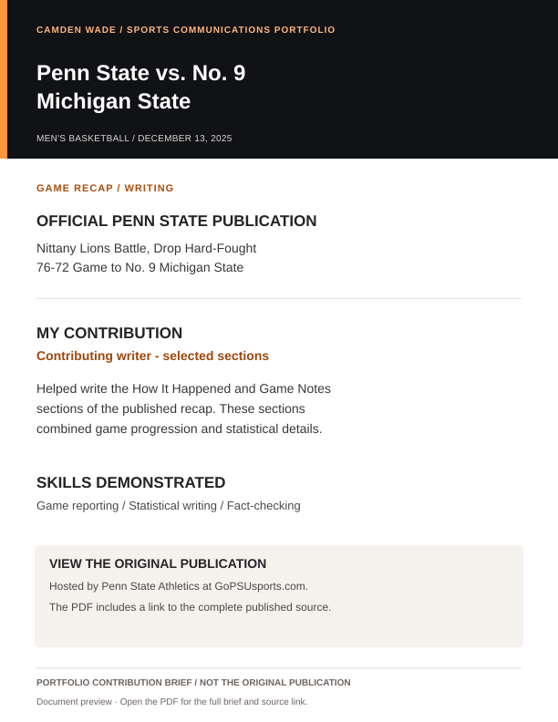

CONTRIBUTION BRIEF PREVIEWMEN'S BASKETBALL DECEMBER 13, 2025
Penn State vs. No. 9 Michigan State
A published men's basketball game recap with a possession-by-possession narrative and postgame statistical notes.
My specific contribution
I helped write the “How It Happened” and “Game Notes” sections of the published recap. It was a collaborative team publication, and I contributed to those sections rather than the entire article.
Skills demonstrated